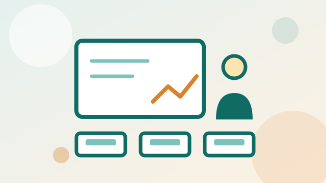

Section 13 of 15
Teaching Practice
Photographs from Teaching Practice 3.

Teaching Practice 3: classroom photographs
Photographs from the Teaching Practice 3 lesson on Output Devices with a Form 3 class. Students became an advertising team: they listened to a starter advertisement, researched an assigned output device and presented a one-minute pitch. The lesson plan, planning sheet, slides and starter video are on the Technology page.